Editor's noteIssue 03 / Three chapters
从流水与屋檐，
望向雪山。
十二张照片，分成三组：腾冲的水与古镇、滇西抗战纪念馆、卡瓦格博峰。
镜头先停在岩石间的流水、檐下花枝和水车的青苔上，也留下和顺古镇的一只猫。纪念馆的雕像与鲜花独立成页；最后四张照片，把视野交给雪山，在晨光的颜色与黑白的纹理之间切换。
- Year
- 2025
- Frames
- 12
- Places
- 腾冲热海温泉 · 和顺古镇 · 艾思奇纪念馆 · 滇西抗战纪念馆 · 卡瓦格博峰
01
Tengchong
腾冲的水与古镇
热海温泉的流水穿过深色岩石。和顺古镇里，花枝与彩绘屋檐相映，猫咪从叶片后望向镜头。艾思奇纪念馆门口的大水车，木质轮辐上覆着青苔，水从其间落下。
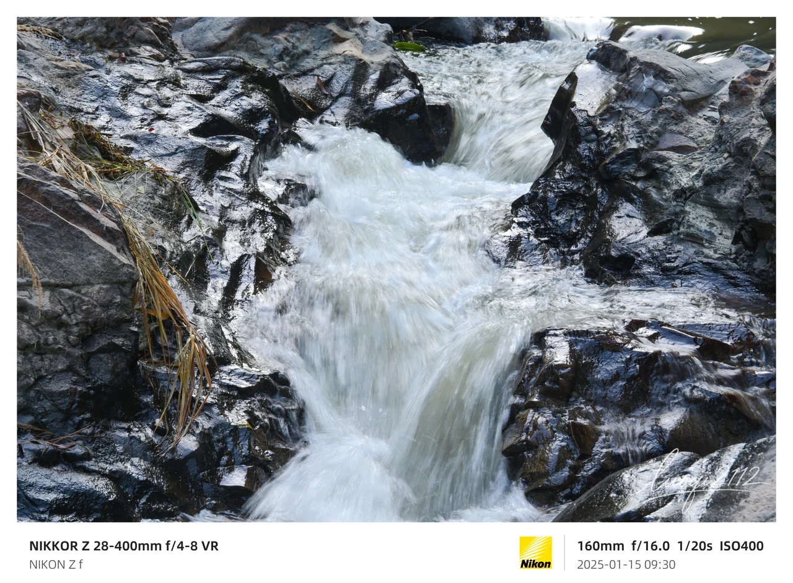
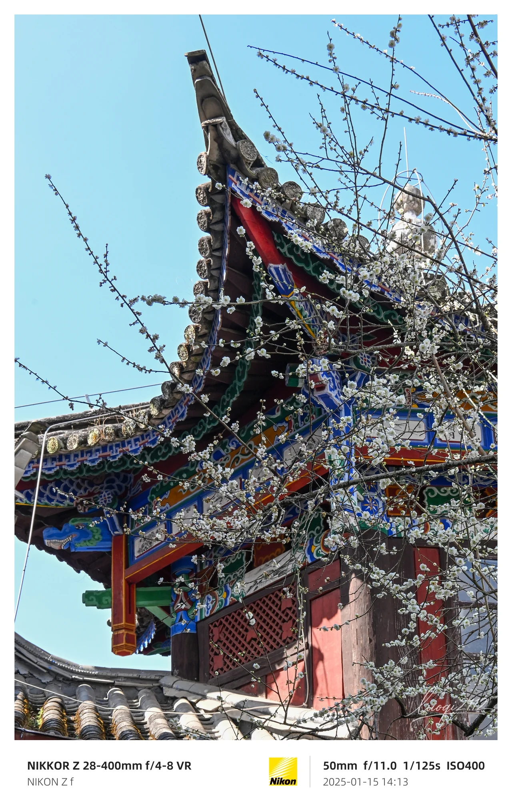
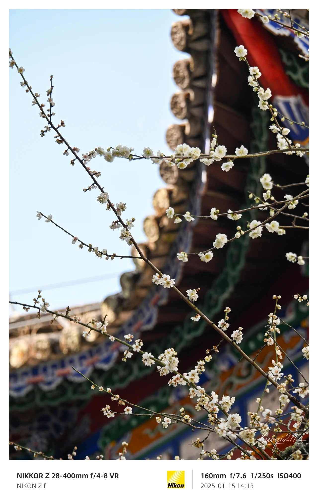
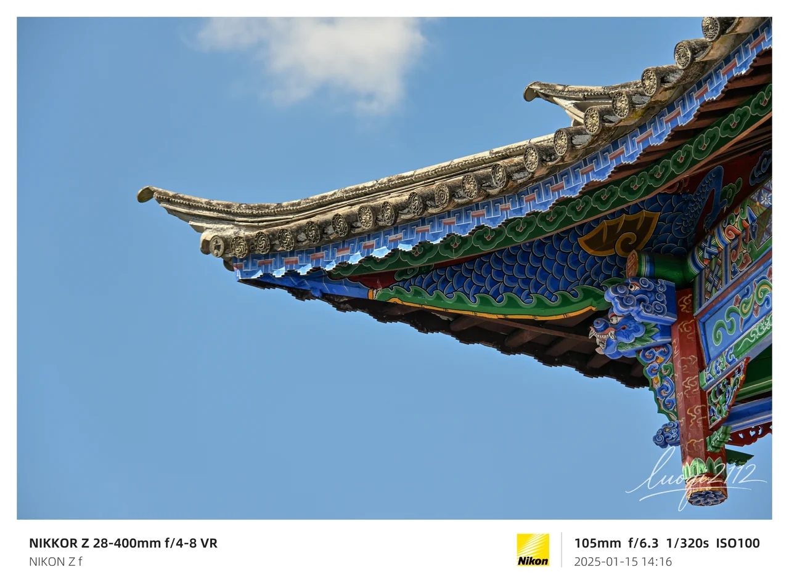
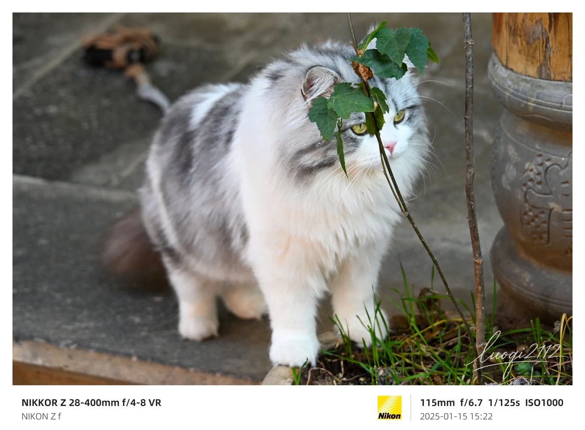
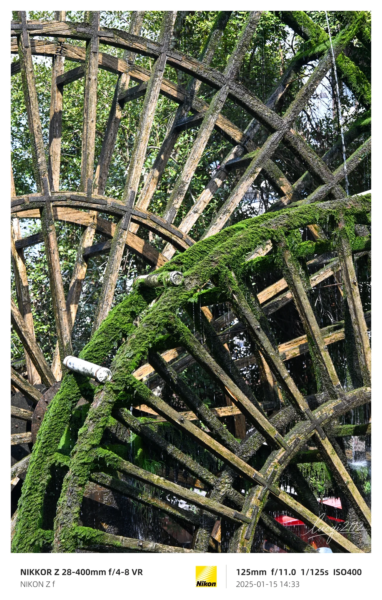
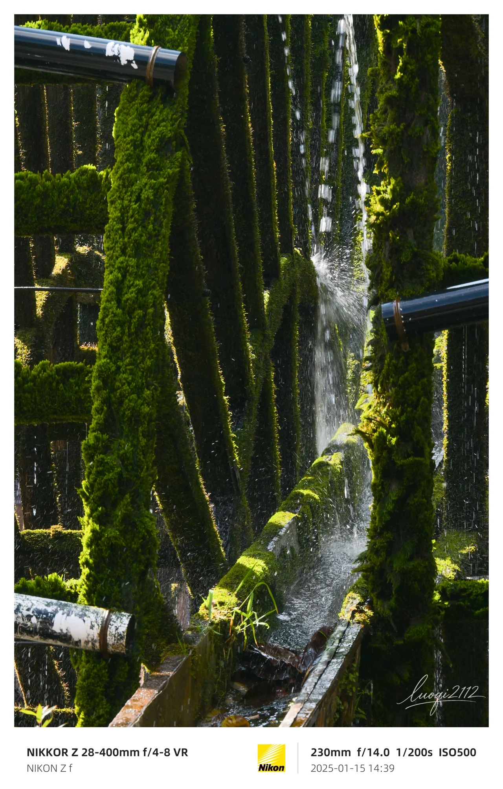
02
Western Yunnan War of Resistance Memorial
雕像与鲜花
滇西抗战纪念馆。树影下的雕像前摆着鲜花，镜头在这里留下一张竖幅。
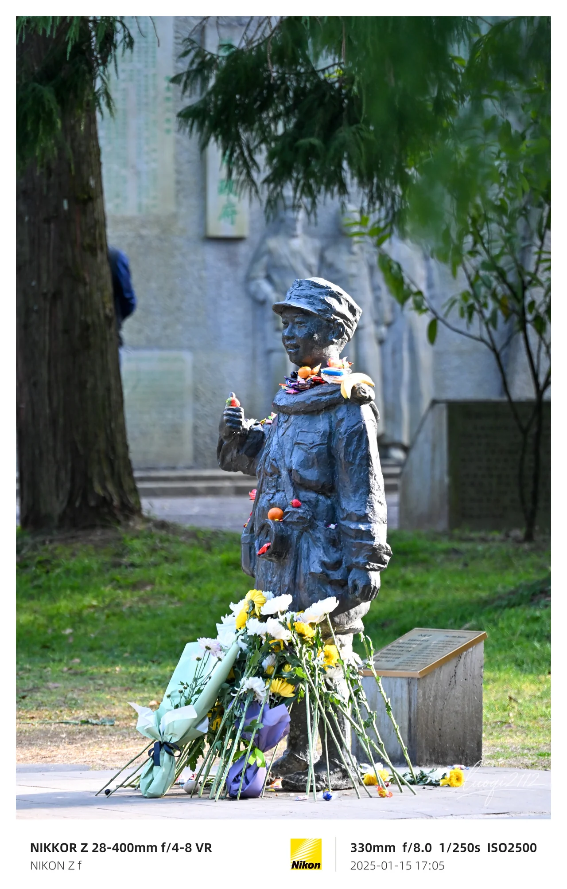
03
Kawagebo
晨光与黑白山影
卡瓦格博峰的四幅影像：晨光落在雪山上，云与月留在天空。彩色画面记录光的暖意，黑白画面则让山脊、积雪与阴影的层次更加分明。
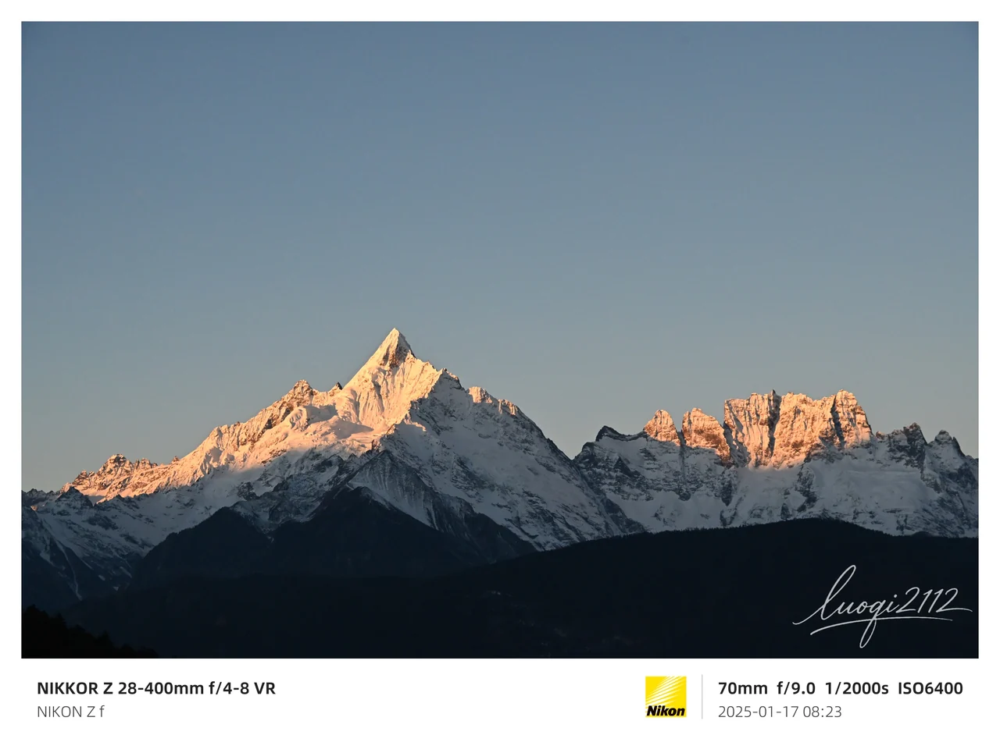
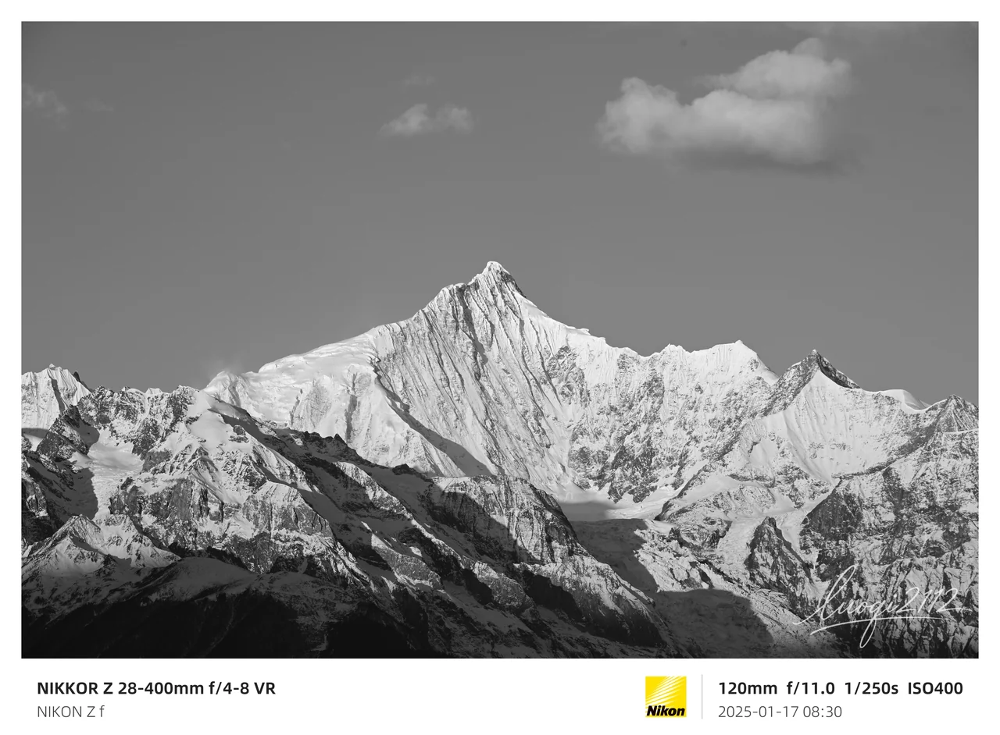
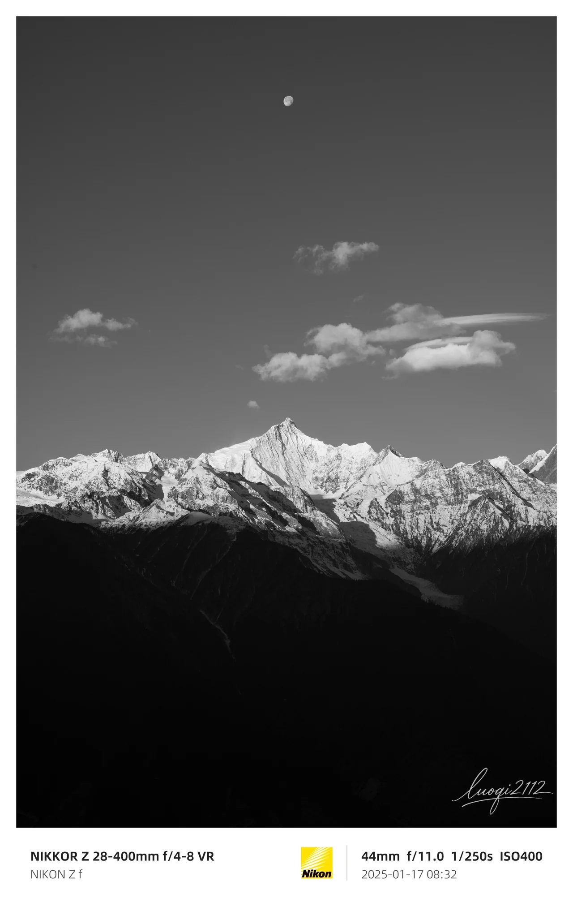
Twelve frames from Yunnan
近处的细节，
远处的山。
从腾冲到卡瓦格博，十二幅画面收在这一期。点击照片，可进入灯箱查看完整作品。
浏览全部摄影作品